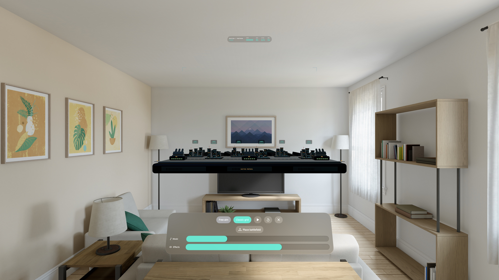

Spatial arcade defense · Apple Vision Pro
Hold the line. Protect the cities.
Bastion Protocol turns your space into a miniature battlefield. Defend six cities from incoming missiles by placing each interception at the right point in the sky.
The browser preview is an earlier version of the game. The Vision Pro app adds free aim, city integrity, moving turrets and spatial audio.

Defense in your space
Six cities. Three batteries.
Choose when and where to fire. Ammunition refills between waves; damage to your cities carries forward.
Aim in three dimensions.
Use gaze and pinch with free aim, or choose the classic grid to set the depth of your shot.
Make room for the battle.
Place the miniature board at a comfortable height, seated or standing. Rotating turrets and spatial sound bring each wave to life.
Every interception counts
Launch from the nearest available battery and lead each missile into an expanding blast. Explosions near a city can cause friendly damage, so a well timed high interception is your best defense.